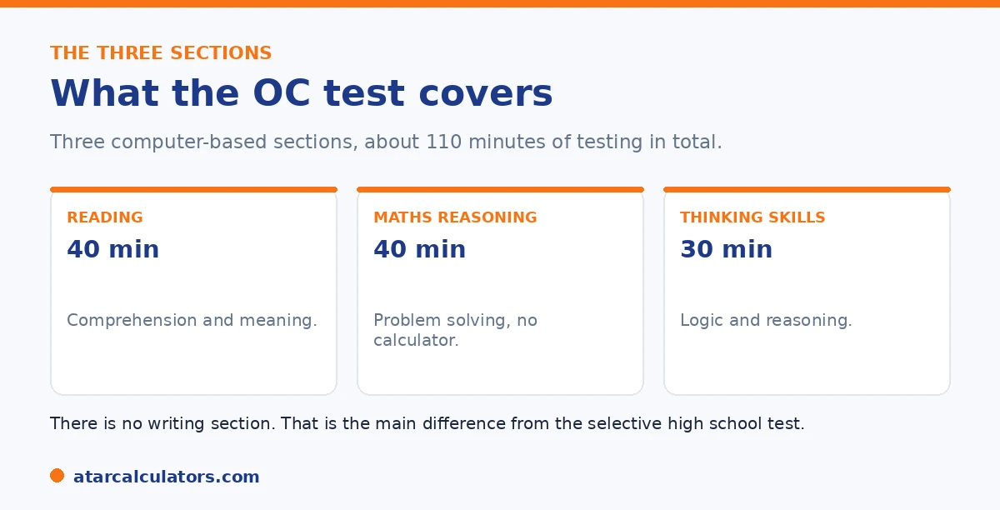

Here is the short version. The OC test has three sections: Reading (40 minutes), Mathematical Reasoning (40 minutes, no calculator), and Thinking Skills (30 minutes). All are multiple choice, and there is no writing. The three sections are widely reported to count equally, though the Department does not publish exact weightings. Each measures reasoning and applying knowledge, not memorised facts.
Knowing what each OC section measures helps you prepare in the right places. The test is short, but each part tests something different.
Below is a breakdown of all three sections and how they combine. To estimate a result, use our OC score calculator.
Key takeaways
- Three sections: Reading, Mathematical Reasoning, Thinking Skills.
- Reading runs 40 minutes; Maths 40 minutes; Thinking Skills 30 minutes.
- All sections are multiple choice. There is no writing.
- No calculator is allowed in the maths section.
- The three sections are widely reported to count equally.
- Each tests reasoning, not memorised facts.
The three sections at a glance
The OC test is made up of three computer-based sections, sat one after another at a test centre. Here is the structure.

| Section | Time | Format |
|---|---|---|
| Reading | 40 minutes | Multiple choice, mixed text types |
| Mathematical Reasoning | 40 minutes | Multiple choice, no calculator |
| Thinking Skills | 30 minutes | Multiple choice, logic and reasoning |
About 110 minutes of testing in total. There is no writing section.
Reading
The Reading section runs 40 minutes. It uses a mix of text types, including fiction and non-fiction, all read on screen. It checks comprehension, understanding meaning, and drawing inferences above the standard Year 4 level.
The texts can be longer and harder than classroom reading, so reading widely and talking about texts is the best preparation.
Mathematical Reasoning
Mathematical Reasoning runs 40 minutes, with 35 multiple-choice questions, each with five options. No calculator is allowed, though paper is provided for working out.
It tests problem solving, not curriculum recall. Questions cover number, patterns, measurement, and logic, drawn from what a child already learns at school but framed in unfamiliar ways. Mental maths and efficient working matter under time pressure.
Want to see how a set of practice scores looks?
Try the OC score calculator →Thinking Skills
Thinking Skills runs 30 minutes, with 30 multiple-choice questions, each with four options. No prior knowledge is needed. It tests logic, reasoning, and problem solving.
This is the section most children find unfamiliar, because the classroom does not teach these question types directly. It often appears as puzzles or pattern questions. It cannot be crammed, so regular practice over months is the way to build it.
How the sections combine
The three scaled scores combine into a single placement score, which ranks every candidate statewide. In the current model, the three sections are widely reported to count equally, at one third each.
One caution: the Department does not publish the exact weightings or a score total. So treat equal weighting as a strong guide rather than an official figure. The practical effect is that no single section can carry a result, so a balanced effort across all three is the sensible plan.
What equal weighting means in practice is that a weakness in one section costs you more than a strength in another can recover. Consider a child who is exceptional at mathematical reasoning but reads slowly. A top maths score cannot fully offset a weak reading score. This is because each section contributes the same share of the total. A child who is solid across all three often ends up with a higher placement score than one who is brilliant in a single area and shaky elsewhere. That has a clear implication for preparation. The biggest gains usually come from lifting your child's weakest section, not from polishing their strongest. It is also why the thinking skills section deserves attention even though it is the least familiar to most families. It carries the same weight as reading and maths but is the one children have usually practised least. Because there is no published score total or cut-off, the useful goal is not a magic number but a balanced profile, strong and even across reading, mathematical reasoning and thinking skills. This is because that is what the equal-weighting model rewards.
There is no writing section
A key thing to know is that the OC test has no writing task. It is three sections: Reading, Mathematical Reasoning, and Thinking Skills, all multiple choice.
So unlike the selective high school test, there is no essay marked against criteria. Every section is answered on screen, which shapes how the score is built.
How the OC score is worked out
The raw marks from the three sections are scaled so they can be compared fairly, then combined into a placement score. Families receive an outcome, not a full section-by-section breakdown of raw marks.
So, as with selective entry, you will not get a neat set of raw scores. What decides offers is the combined placement score after scaling.
A balanced result matters
Because the three sections combine into one score, a weak section pulls the whole result down. There is no single section that can carry the others.
So aim for even strength across reading, mathematical reasoning and thinking skills. Shoring up the weakest of the three usually helps the overall score more than pushing an already strong one higher.
The Thinking Skills section
Thinking Skills is often the least familiar of the three OC sections. It tests reasoning and problem-solving rather than taught content, asking children to spot patterns and work through logic puzzles.
So a little exposure to this style of question helps, mainly so it feels familiar. It rewards clear thinking, which grows with varied practice rather than memorising any single method.
Preparing across all three
Because the three sections combine into one placement score, preparation should cover all of them fairly evenly. A gap in any one drags the whole result down.
So resist focusing only on your child's strongest area. Spreading attention across reading, mathematical reasoning and thinking skills, and shoring up the weakest, tends to help the overall score most.
Common questions
What are the OC test components?
Three sections: Reading (40 minutes), Mathematical Reasoning (40 minutes, no calculator), and Thinking Skills (30 minutes). All are multiple choice, and there is no writing section.
How is the OC score broken down?
Each section is scaled, then the three scaled scores combine into a placement score that ranks students statewide. Families get a performance band for each section rather than raw marks.
Are the OC sections weighted equally?
In the current model they are widely reported to count equally, at one third each. The Department does not publish exact weightings, so treat that as a strong guide rather than an official figure.
Which OC component matters most?
Under the current model, none. The three sections are widely reported to count equally, so a balanced effort matters most. Your child's weakest section limits the result.
Is there a writing section in the OC test?
No. The OC test has only Reading, Mathematical Reasoning, and Thinking Skills. The writing task belongs to the selective high school test, not the OC test.
Can a calculator be used in the OC maths section?
No. No calculator is allowed in Mathematical Reasoning, though paper is provided for working out. Mental maths and efficient working matter under time pressure.
Estimate an OC result
Enter practice section results for a rough competitiveness guide. Free, and no signup.
Open the OC score calculator →Related guides
This guide is general information for parents, not formal advice. The NSW Department of Education sets the rules, and details can change. It does not publish section weightings, a score total, or class cut-off scores. So always confirm current details on the official NSW opportunity classes pages. Reviewed by the ATARCalculators Editorial Team.